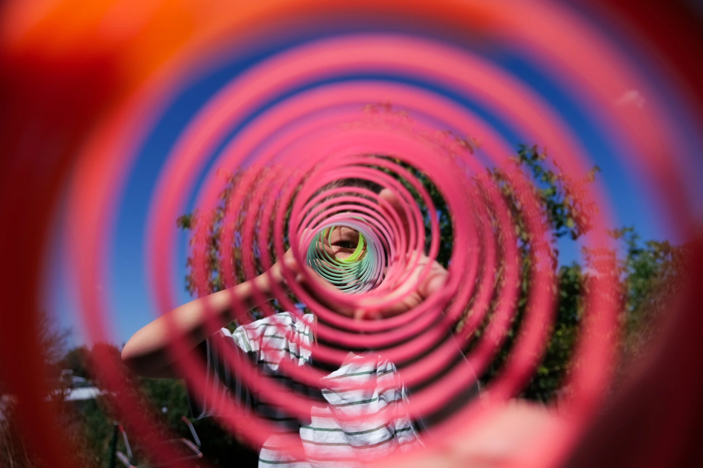
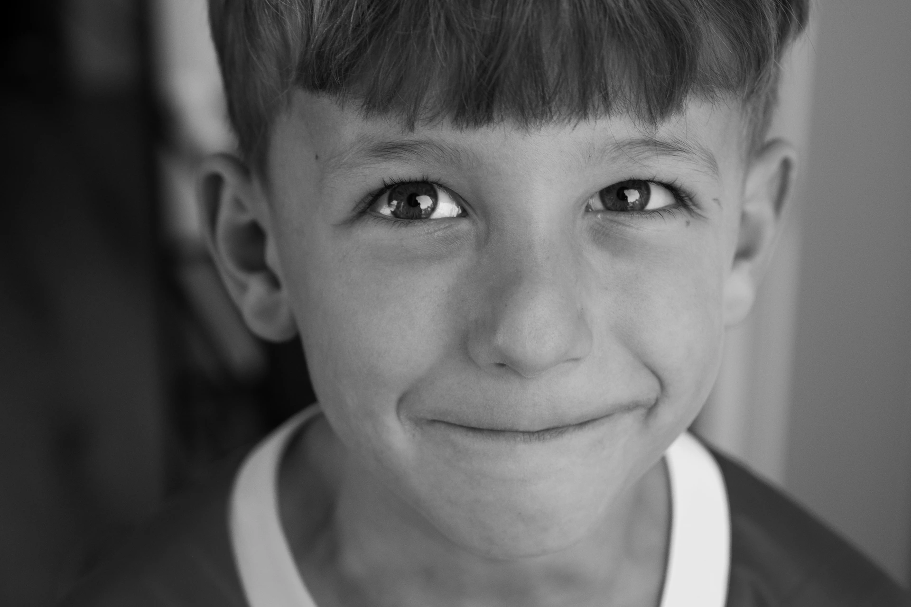

Skip to content
LUCIJA
SPASEVSKA
photographer
Work
About
@lucijas_photography
Get in touch
All collections
Nature & children
22 photographs


Next collection
Landscapes & wildlife
Nature & children
Full resolution
Close
Previous
Next